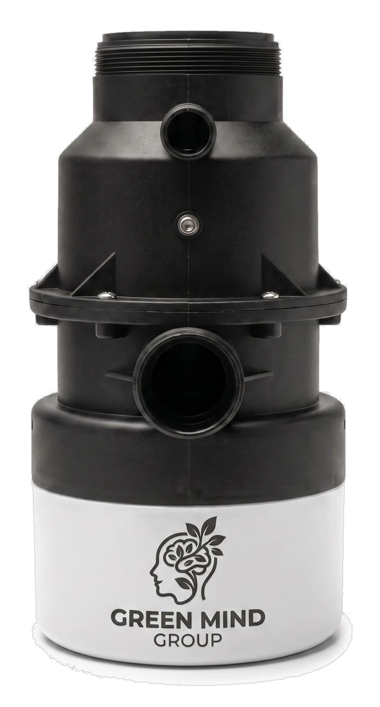
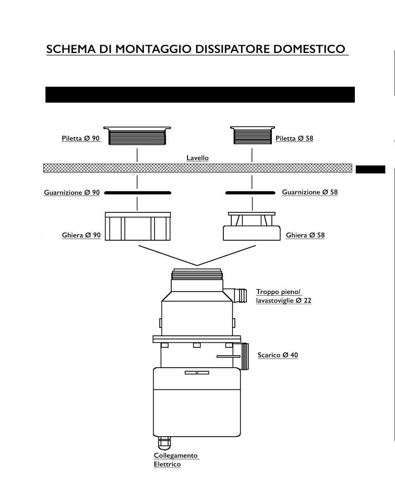

Il secchio dell'umido va in pensione. VORTIX riduce gli scarti di cucina in particelle microscopiche e le convoglia con l'acqua, all'istante, sotto il lavello.

Raccogliere. Chiudere il sacchetto. Portarlo giù. Lavare il secchio. Ricominciare il giorno dopo.
Un rito che si ripete da decenni in ogni casa — finché qualcuno non ha deciso che poteva finire per sempre.
In pochi istanti, VORTIX riduce gli scarti alimentari in particelle microscopiche e le convoglia con l'acqua direttamente nello scarico. Niente più raccolta, niente più trasporto, niente più cattivi odori.
Scopri la tecnologiaButta gli avanzi organici direttamente nel lavello, come faresti sempre.
Un semplice tocco avvia il ciclo, in tutta sicurezza.
A 11.000 giri/min gli scarti vengono polverizzati per impatto, senza lame.
Il tutto viene eliminato con l'acqua corrente. Fine della storia.
A differenza dei trituratori tradizionali a lama, VORTIX usa la forza centrifuga per polverizzare gli scarti per impatto, non per taglio. Un principio più semplice. Più sicuro. Costruito per durare.
Il disco a forza centrifuga è l'unica parte in movimento: nessun filo, nessun taglio, solo velocità pura convertita in pressione.
Elimina i cattivi odori alla fonte, non li nasconde.
Nessun contatto diretto con i rifiuti, nessuna lama esposta.
Trasforma gli scarti in pochi istanti, senza sforzo.
Riduce i rifiuti da smaltire e l'impatto ambientale della tua cucina.
Progettato per non disturbare la famiglia né i vicini.
Nessun secchio, nessun bidone: più spazio libero in cucina.
VORTIX si adatta a case private, condomini e attività professionali.
VORTIX si collega alla piletta del lavello esattamente come un normale elettrodomestico: nessun intervento strutturale sull'impianto idraulico di casa.

Una volta installato, VORTIX scompare alla vista: resta solo il gesto naturale di gettare gli scarti nel lavello, sapendo che il resto è già stato risolto.
Investire in VORTIX è una scelta sicura: qualità italiana, assistenza vera, copertura a lungo termine.
Copertura ufficiale su motore e componenti.
Supporto tecnico diretto, senza call center esteri.
Prova VORTIX a casa tua prima di decidere, senza obbligo d'acquisto.
Un tecnico VORTIX viene a casa tua, installa il dispositivo sotto il tuo lavello e te lo mostra in funzione. Nessun impegno all'acquisto.
Hai domande prima di prenotare? Leggi le FAQ o contattaci.
Passa a VORTIX: la tecnologia che trasforma i tuoi scarti in acqua, per una cucina più pulita, igienica e moderna.
Prenota una dimostrazione a casa tuaAiutaci a capire le tue abitudini in cucina: a fine percorso ricevi un codice sconto da usare sul tuo VORTIX.